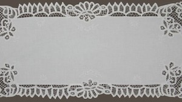
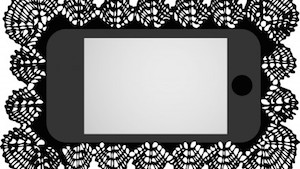
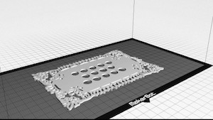
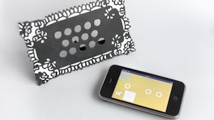
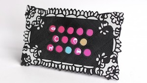
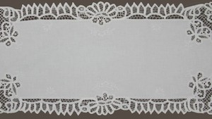
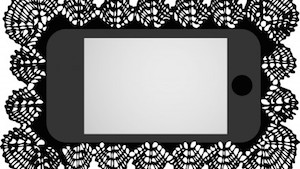
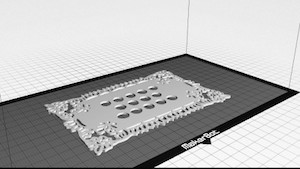
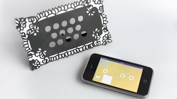
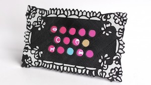

The following is an interview published by The Guide Istanbul, by Kevin Yıldırım on 30 April 2013.
After watching this inspirational video, about reusing found resources to make new furniture, we got in touch with its maker, a Dutch university exchange student taking a 'Design For Social Innovation' course, given by Çiğdem Kaya, here in Istanbul to find out about the motivation behind it.
First of all, can you tell us a little about yourself and what brought you to Istanbul?
I'm Jip Eilbracht and I'm 21 years old. I'm from the Netherlands, where I’m currently studying, in my 3rd year of Industrial Design Engineering at the Technical University in Delft. In your 3rd year you have the chance to do any study programme you want at your own or a different university for 5 months. I saw it as a chance to live in a different country and experience a different kind of life for a while. Istanbul attracted me because it's quite an unfamiliar place for me and a lot of other people, even though it's not that far from the Netherlands. I had also visited it once and had a very good experience. I think as an Erasmus student you can have a great time in any city, but Istanbul is such an interesting place in terms of culture, things that happen, and how people live - it can open up your vision.
Your video touches on the problem of second-hand stores in trendy neighborhoods, which is that their costs often come close or exceed those of new products. The past is obviously a great source of inspiration for this generation, but at what point do second-hand goods lose their worth?
I mostly see second-hand shops as places where you can get loads of different stuff very cheaply, just like a second-hand market place online. You are very happy when you've found a real gem, at a very low price, but it comes at the cost of a long search. The second-hand shops in Cihangir are more focused on a certain lifestyle and act as kind of curators. They do the long search and find the gem, but at the cost of the price you pay. A lot of people find this very convenient and easy, that's why these shops exist. But to me, being a real Dutch person, buying something doesn't feel that good when I paid too much for it. The real joy is to find something cheap when it’s as good, or better than new stuff.
Having cheaply furnished your room, what tips would you give people who want to do the same?
One of the ways in which I found some useable stuff was to just walk around my neighborhood. Keeping my eyes open, talking to people (as far as I could talk with them) and finding out whether they have things they don’t need or want anymore, but might be still be useable. If you find stuff on the streets, don’t be afraid when they’re a bit dirty or not so good looking. You’ll be amazed with what a small piece of sandpaper or a lick of paint can do.
If you really want to get started, invest a little bit in hand tools. They always come in useful, and you can lend them out to friends when they’re doing the same. I’m sure that in Karaköy for example, you can get some good deals on tools. Also remember that it's nice to have things in quantity. One wooden crate brings you nothing, but you can make a nice closet if you've got 10 of them.
There are great deals to be had in and around Cihangir, Beyoğlu, etc. if people leave behind certain second-hand stores and seek out places where locals do their shopping. Do you have any recommendations for people shopping on a budget in Istanbul?
I was surprised to find a shopping mall on the Istiklal with tens of shops with very cheap quality clothes. I’m not sure of the name, but it’s somewhere opposite of SALT, underneath a pretty fancy restaurant. So that's a good one to visit when you are in need of clothes or just want to do some shopping.
For food there's of course the Tarlabaşı Sunday market, where you will find plenty of other locals and Erasmus students who are doing their food shopping. Or when you're looking for a nice breakfast get a cheap fully-filled sandwich from a street cart around Taksim square and find a nice place to sit and enjoy. Maybe another thing which can be seen as a great deal are the Cihangir steps. With a low-price beer from a supermarket, you get the same view over Istanbul as all the top-notch terraces. How's that for a cheap evening out?!
Cihangir is one of Istanbul’s most cosmopolitan neighborhoods. Is it managing to retain its local flavor, or is Cihangir simply becoming aligned with other like-minded neighborhoods in cities across Europe and North America?
As for as the few places I've visited in other countries, I agree that Cihangir is a very cosmopolitan neighborhood. It's one of the few areas in Istanbul where a lot of people in restaurants and shops can speak English, in a non-touristic way. I always found it such an interesting place to be, because it's so different from the bordering neighborhoods, in a positive way. The streets are greener and more modern, with a lot of quiet areas. But if you look at all the fancy places you can go to, you clearly see they got some inspiration from other cities.
We may think that the city should work towards making urban living more affordable, but there has been such an influx of money into Istanbul recently that it may seem futile for them to cater to the less wealthy residents. What are some of the ways people in Istanbul can make urban living more affordable?
One of the trends which I spotted is that a lot of Turkish people order (fast) food from home. This is actually quite an expensive way of eating every day. As a student, I’m used to cooking for myself and others. In Istanbul and Turkey, food is very cheap if you compare it to the rest of Europe. If you buy your food from the weekly markets, it’s almost as if you get it for free! Even though the quality is super. So to make your living more affordable, I would suggest using your kitchen more often and be on the lookout for markets in your neighborhood.
Regarding furniture, it might be a bit hard to compete with IKEA or Koçtas, even when you scavenge a lot on the street and buy parts yourself. What I think is that you can get a more personal environment you live in, instead of living in a catalogue. But perhaps that’s a bit out of the scope of this question.
Istanbul is filled with objects from its past, but people face a lot of pressure to embrace new objects into their lives. What message would you give to the people of Istanbul, in terms of using what already exists?
Of course there’s a lot of pressure on everybody to buy new products. It’s in almost every company’s interest that you buy something new instead of using something which already exists, or being content with what you have. A way in which you can counteract this influence of marketing is to look around and be inspired by what other people are doing. I made this video to inspire other people from Istanbul to do the same, give them some ideas of what can be possible. There are so many other people doing this, showing what you can do with things which already exist; on the internet, local communities or even the people in your own surroundings. If you know what’s possible and where to start, the next idea of what you can make might just pop into your head.
Why do you think there is a stigma around urban scavenging? How can people be educated in order to convince them that recycling means more than throwing our bottles and cans in appropriately labeled bins?
The first time I found some wooden crates and brought them home to make something of, my Turkish flatmates asked me why I collected trash. After making a closet from the wooden crates, they still weren’t convinced that it was suited for furniture. I think using waste material for new things has got a stigma because it’s something ‘other people do’. If you live in a proper house and you have the money to buy a closet for 80 Liras, you’ll do it. If you have some chairs you don’t need anymore, you put them out for the garbage man. Consumers need to be more conscious about what they’re doing and more active in their way of living. Maybe your neighbor can use some chairs, or even use the wood from them.
During my studies at the ITU we discussed a lot about design and DIY, how we can get people to be their own designers. I think the point is for everyone to be their own designer. The knowledge an industrial designer has got in terms of creativity, materials and how to build things needs to be easy accessible to more people. In that way, consumers can have the ability to think of a new use for their old closet and a better knowledge on how to build something new in a good way.
With regards to my flatmates; after they helped me with this video and saw the result, they really changed their perspective. Now they know those old products I collected aren’t trash, but can be used for something in their house!

 











 The product was created around the context of the library of the future, a place that won't hold a physical collection anymore. Instead, the space is filled with playful and adventurous furniture. The digital content is placed in a virtual layer above the physical space, therefore each digital item is bound to a specific physical location.
The product was created around the context of the library of the future, a place that won't hold a physical collection anymore. Instead, the space is filled with playful and adventurous furniture. The digital content is placed in a virtual layer above the physical space, therefore each digital item is bound to a specific physical location. This product helps 9 to 13 year old boys to find a book from this collection that they would like to read. In that way, they like to read that book, and continue to read throughout their lives.
This product helps 9 to 13 year old boys to find a book from this collection that they would like to read. In that way, they like to read that book, and continue to read throughout their lives. The product consists out of a handheld device which contains a tablet. Using the loose parts the boy can build his own character. Each body part that he picks represents a theme or category from a book.
The product consists out of a handheld device which contains a tablet. Using the loose parts the boy can build his own character. Each body part that he picks represents a theme or category from a book. The boy can pick out the body parts he likes and then click them onto the device. Creating his own unique character. The selected themes are translated into a personalized selection of stories.
The boy can pick out the body parts he likes and then click them onto the device. Creating his own unique character. The selected themes are translated into a personalized selection of stories. When the character is complete, it comes alive. Its eyes open up and start moving. The character acts as a librarian, helping the boy find his way through the library.
When the character is complete, it comes alive. Its eyes open up and start moving. The character acts as a librarian, helping the boy find his way through the library. The personalized collection is placed on a physical location inside the library. The boy has to find this location, which is done by playing hide and seek with the character.
The personalized collection is placed on a physical location inside the library. The boy has to find this location, which is done by playing hide and seek with the character. When he has found the location, he can browse through the different books. This is done by moving the device around, in which the screen acts as a viewport to the virtual layer.
When he has found the location, he can browse through the different books. This is done by moving the device around, in which the screen acts as a viewport to the virtual layer. Now that the boy has found a book he wants to read, he opens the cover of the device and the e-book appears on the screen.
Now that the boy has found a book he wants to read, he opens the cover of the device and the e-book appears on the screen. Between all the playful objects and comfortable seating in the library, he can find a nice place to read. From here on the story takes hold of him, taking him into the next adventure...
Between all the playful objects and comfortable seating in the library, he can find a nice place to read. From here on the story takes hold of him, taking him into the next adventure...


 When a new task is created, it is immediately placed in the right categories. Attachments can be quikcly accessed through the list view, kickstarting the task when the user decides to start with it.
When a new task is created, it is immediately placed in the right categories. Attachments can be quikcly accessed through the list view, kickstarting the task when the user decides to start with it. The priority of the task is set by a slider. To put this abstract priority in context, more and less important tasks are shown while the slider is moved. The app can alter priorities automatically too, for example when a task is left undone for a long time.
The priority of the task is set by a slider. To put this abstract priority in context, more and less important tasks are shown while the slider is moved. The app can alter priorities automatically too, for example when a task is left undone for a long time. To remind the user without interrupting them, the next task is shown in the app tile on the start screen of the phone. The icon provides a clear reference to the app, not needing a fixed app name.
To remind the user without interrupting them, the next task is shown in the app tile on the start screen of the phone. The icon provides a clear reference to the app, not needing a fixed app name. When there's a task that is closely related with the content on the screen, like viewing a contact of opening a word file, a toast notification is shown to remind the user in a subtle way about the task.
When there's a task that is closely related with the content on the screen, like viewing a contact of opening a word file, a toast notification is shown to remind the user in a subtle way about the task.